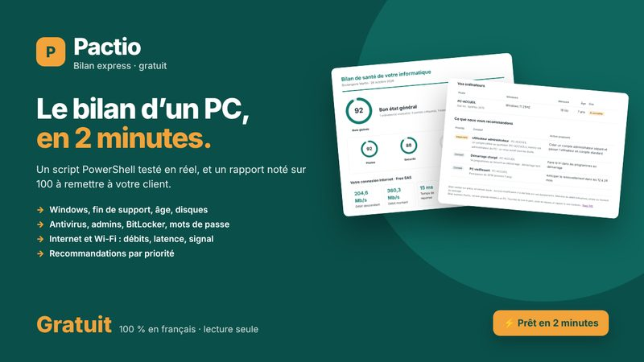
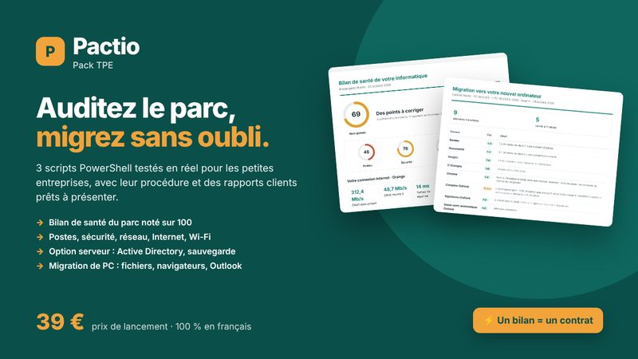
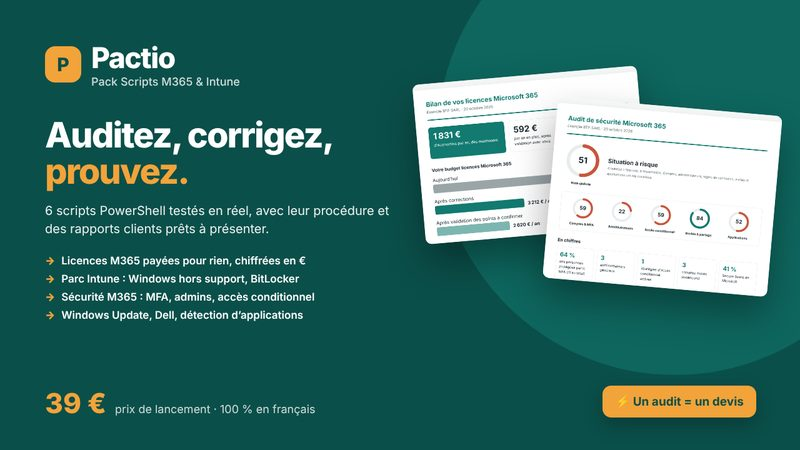

Le rapport que votre client comprend, généré par un script qui a déjà tourné.
Des scripts PowerShell pour auditer un parc de TPE, un tenant Microsoft 365 ou migrer un PC, avec leur procédure et un rapport client en français.
Lecture seule. Aucun module à installer pour le bilan de santé. Testé sur un tenant de plus de 1 300 comptes et un labo Windows Server 2022.
Les outils
Commencez par le Bilan express, gratuit. Les packs ajoutent tout le parc, le réseau, le serveur, Microsoft 365 et vos couleurs sur les rapports.

Bilan express
Le bilan de santé d'un PC Windows en 2 minutes : version de Windows et fin de support, âge, disques, antivirus, comptes administrateurs, BitLocker, débit Internet et Wi-Fi. Le rapport est noté sur 100 et classe les actions par priorité.

Pack TPE
Pour les TPE avec ou sans serveur.
- Bilan de santé de tout le parc, tournée par clé USB
- Option serveur et Active Directory
- Migration vers un nouveau PC
- 4 procédures PDF illustrées

Pack Microsoft 365 et Intune
Pour les PME équipées de Microsoft 365.
- Licences payées pour rien, chiffrées en euros
- Audit de sécurité du tenant noté sur 100
- Inventaire Intune, Windows Update, Dell
- 6 scripts, 7 procédures
Kit Signature
Pour signer vos premiers contrats de maintenance.
- Proposition commerciale à deux formules
- Contrat de maintenance informatique
- Annexe RGPD (article 28)
- Générateur à vos couleurs
Du script au rendez-vous client
Trois étapes, la même pour chaque outil.
Vous lancez le script
Sur le poste du client ou depuis une clé USB, en suivant la procédure. Les audits ne modifient rien.
Le rapport se génère
Une note sur 100, les constats classés critique, important ou conseil, avec l'appareil ou le compte concerné.
Vous le présentez
Le client voit en une page ce qui doit être corrigé. C'est votre support pour un devis ou un contrat de maintenance.
Testé avant d'être vendu
Un script généré en dix secondes a l'air parfait et casse chez le premier client. Chaque outil Pactio a tourné en réel, et ses pièges ont été corrigés.
Audit des licences et audit de sécurité Microsoft 365 lancés sur un vrai tenant d'entreprise.
Domaine Active Directory, PC Windows 11 joint, collecte à distance et migration de bout en bout.
Profils Firefox, Chrome et Edge, Outlook, imprimantes, lecteurs réseau, utilisateur standard.
Guides
Des méthodes concrètes, utilisables avec ou sans nos outils.
Rapport d'audit informatique pour une TPE
Les 6 thèmes à vérifier, la notation et le format que le client lit vraiment.
Licences Microsoft 365 payées pour rien : les 7 cas
Comptes désactivés, licences qui se recouvrent, invités licenciés, et comment chiffrer l'économie.
Audit de sécurité Microsoft 365 pour une PME
MFA, administrateurs, accès conditionnel, invités, applications : par où commencer.
Bilan de santé d'un PC Windows avec PowerShell
Les points à vérifier, en lecture seule, et une note sur 100 qui ne ment pas.
Contrat de maintenance informatique : les clauses indispensables
Périmètre, délais, forfait et hors forfait, résiliation, annexe RGPD article 28.
Besoin d'un script précis ?
Un audit propre à votre client, une tâche répétitive, un rapport que vos outils ne savent pas produire : je l'écris pour vous, testé et documenté.
Questions fréquentes
Les scripts Pactio modifient-ils les postes ou le tenant du client ?
Non pour les audits : le Bilan express, le bilan de santé du parc, l'audit des licences et l'audit de sécurité Microsoft 365 sont en lecture seule. Les scripts qui corrigent (Windows Update, Dell Command Update, restauration de migration) ont un mode simulation et ne se lancent que si vous le demandez.
Faut-il installer quelque chose ?
Les scripts du Pack TPE et le Bilan express tournent avec PowerShell 5.1, fourni par Windows 10 et 11, sans module à installer. Les scripts Microsoft 365 utilisent le module officiel Microsoft Graph PowerShell, installé par un script de préparation fourni.
Peut-on mettre son propre logo sur les rapports ?
Oui. Les rapports des packs acceptent votre nom, votre logo et votre couleur. La version gratuite du Bilan express garde la présentation Pactio.
Les scripts ont-ils vraiment été testés ?
Oui, chaque script a tourné en conditions réelles avant sa mise en vente : un tenant Microsoft 365 de plus de 1 300 comptes, un labo Windows Server 2022 avec domaine Active Directory et un PC Windows 11 joint, et de vraies migrations de PC.
Puis-je utiliser les scripts chez tous mes clients ?
Oui. La licence couvre une entreprise, avec des clients illimités. La revente et le partage des scripts sont interdits.
Comment se passe l'achat ?
Par Gumroad, qui encaisse le paiement, gère la TVA et envoie le lien de téléchargement par mail immédiatement.